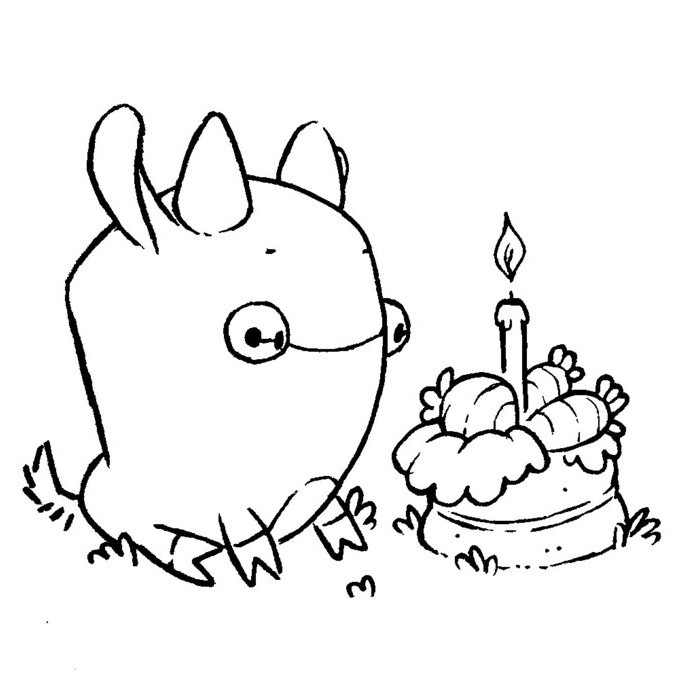
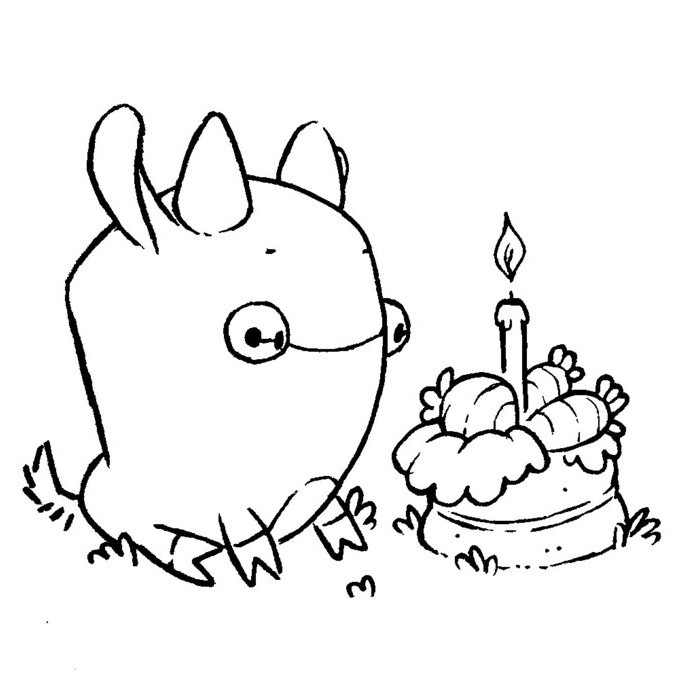
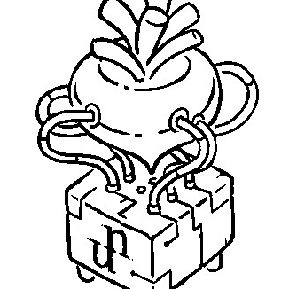
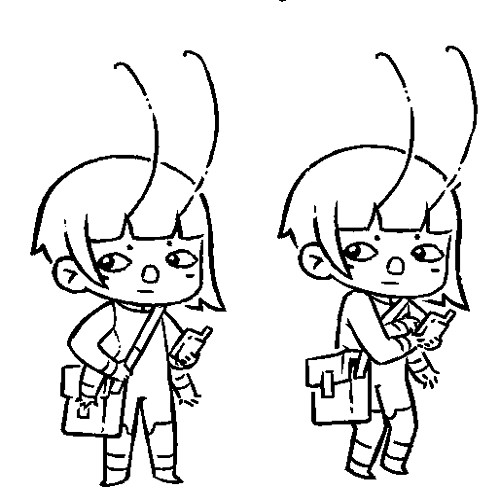
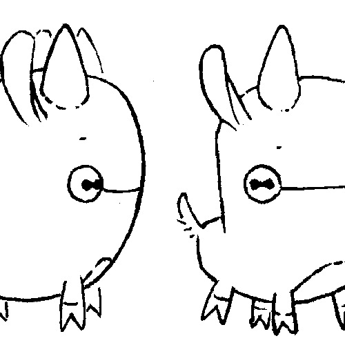
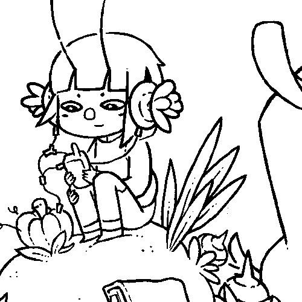
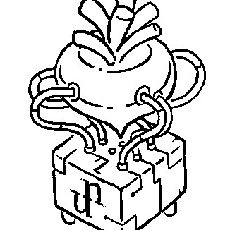
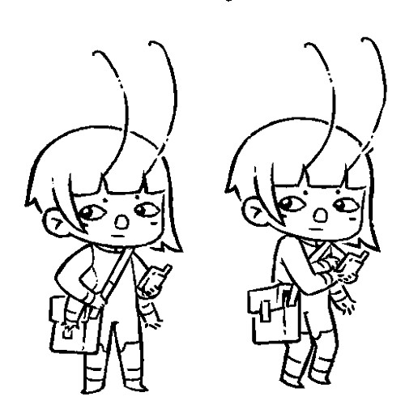
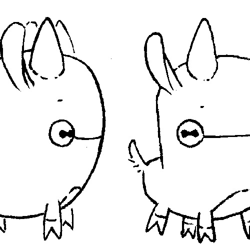
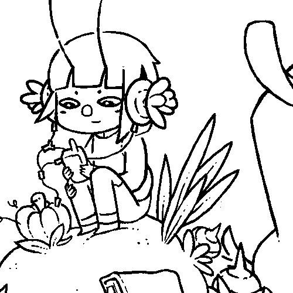

Uxn
The Uxn ecosystem is a personal computing playground, created to host small tools and games, programmable in its own unique assembly language.
It was designed with an implementation-first mindset with a focus on creating portable graphical applications, the distribution of Uxn projects is akin to sharing game roms for any classic console emulator.
It was designed by Devine for the 100r projects. The project now has many collaborators and has grown a lot since it's creation.
I make all illustrations related to the project, such as the ones featured in the documentation. The illustrations are drawn on paper, photographed and processed with Gimp. The little ox-like creature represents Uxn.
The humanoid character is named Varvara. The Varvara computer system was designed with a focus on portability, built on top of the Uxn virtual machine
 


 






